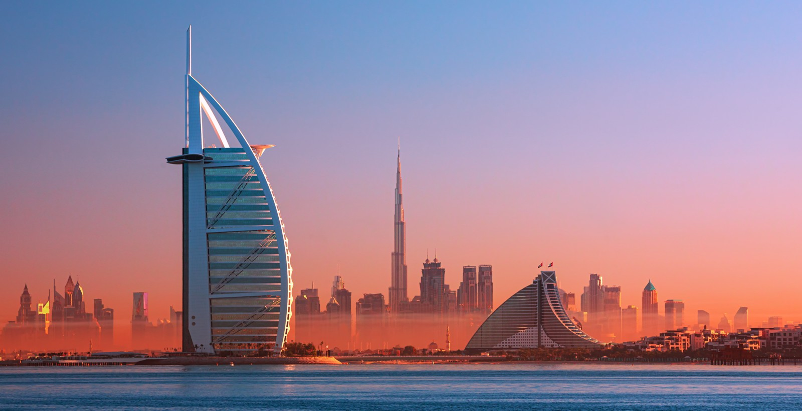

Биг дата в эмирате Дубаи
Мифы и реальность
Часть первая. Опасность кибератак в ОАЭ: неприступная крепость
Объединённые Арабские Эмираты — это неприступная крепость, в которой кибербезопасность возвели в абсолют. ОАЭ входят в элиту мировых лидеров по цифровой защите, закрепив за собой место в Глобальном индексе кибербезопасности ООН (Global Cybersecurity Index, GCI). В 2024 году государство поднялось в рейтинге благодаря своим инвестициям, сверхсовременным технологиям и привлечению лучших специалистов, ставшим защитниками национальных данных и инфраструктуры. На страже информации стоят мощные агентства, такие как Национальный совет по кибербезопасности и Центр электронной безопасности Дубая (DESC). Эти структуры контролируют безопасность всей цифровой системы страны, управляя программами типа Dubai Cyber Security Strategy, которая защищает данные правительства, частные компании и инфраструктуру. Система создана так, чтобы в любой момент мгновенно отражать угрозы и отслеживать кибератаки ещё до их реализации.
"Медовые ловушки" и суровое правосудие: кибербезопасность в Эмиратах
Страна сотрудничает с ведущими мировыми компаниями, такими как IBM и Cisco, а также с ключевыми игроками вроде DarkMatter. Вместе они создают киберщит, многослойный и устойчивый к внешним и внутренним угрозам. А в его ядре стоят цифровые ловушки: сложные "медовые ловушки" (honeypots), которые заманивают взломщиков, отслеживая их действия до мельчайших движений курсора. Любая попытка доступа сразу запускает ответную атаку, блокировку и даже полное уничтожение систем взломщика. Для тех, кто захочет провернуть такое дело, последствия могут быть смертельными. Законы ОАЭ карают за кибервторжения с безжалостной суровостью: 25 лет тюрьмы и штрафы, способные разорить кого угодно. А если хакер — иностранец, за ним начнётся международная охота. Весь мир готов помочь Эмиратам преследовать нарушителей, потому что данные о недвижимости в Дубае — это не просто информация, это экономический актив национального масштаба. В случае утечки ОАЭ квалифицируют это как угрозу национальной безопасности, а наказание — как для террористов.
Взлом осиного гнезда: как утечка данных из ОАЭ угрожает элите
Многие влиятельные люди в России имеют интересы в Эмиратах, включая не только законных инвесторов, но и тех, чьи активы находятся под пристальным вниманием правоохранительных органов. Среди них — государственные чиновники, бизнес-элита, Рамзан Кадыров, который владеет виллой на острове Пальма Джумейра. Даже Российский фонд прямых инвестиций (РФПИ) активно участвует в крупных сделках в ОАЭ. Попытка взлома может не просто нарушить киберзащиту страны, но и раскрыть тайные связи и активы, находящиеся в Эмиратах. Если данные окажутся в чужих руках, это может спровоцировать физические последствия в самой России: те, чьи секреты окажутся на виду, могут использовать любые методы, чтобы устранить утечку. Кадыров и люди из его окружения славятся жёсткими методами; коррупционеры и крупные финансисты не остановятся ни перед чем, чтобы сохранить свои активы и репутацию. Любой, кто рискнёт потревожить это осиное гнездо, рискует стать мишенью не только для закона, но и для людей, привыкших решать вопросы силой.
Часть вторая. Восточная сказка и мировой кризис
В начале 2000-х Дубай представлял собой настоящую восточную сказку: город, построенный посреди пустыни, стремительно превращался в символ роскоши и амбиций, привлекая инвесторов со всего мира. Башни и искусственные острова поднимались на фоне песков, словно мираж, обещая своим владельцам место в эпицентре новой мировой столицы туризма и бизнеса. Тысячи людей верили в эту сказку, вкладывая миллиарды долларов в проекты, обещающие стать настоящими жемчужинами региона. Но в 2009 году восточная сказка столкнулась с жёсткой реальностью мирового финансового кризиса. Обрушение цен на недвижимость и резкий спад спроса подорвали устойчивость многих проектов, которые, казалось бы, были обречены на успех. Dubai World, материнская компания таких гигантов, как Nakheel, не смогла выполнить свои финансовые обязательства и объявила о реструктуризации многомиллиардного долга.
Крах восточной сказки: как кризис обрушил мечты инвесторов
Это событие стало шоком не только для инвесторов, но и для мирового рынка, а проекты, в которые люди вложили свои сбережения, остались незавершёнными или замороженными. Для тех, кто вложился в "дубайскую мечту", кризис 2009 года стал крахом надежд и иллюзий. Дубай, казавшийся символом неограниченных возможностей, на время превратился в предупреждение о том, как хрупка может быть красота восточной сказки, если она стоит на зыбком песке финансовых пузырей. Кризис 2009 года обрушился на Дубай, разрушая амбиции и судьбы инвесторов, поверивших в «чудо пустыни». В этом кризисе ключевую роль сыграли крупнейшие девелоперы и строительные гиганты, чьи проекты обещали превратить Дубай в столицу роскоши и инноваций. Среди пострадавших оказались и частные лица, и международные компании, влившие миллиарды в экономику эмирата.
Местные компании-застройщики: те, кто строил Дубай ч. 1
Emaar Properties — одна из крупнейших компаний, стоящая за проектами Burj Khalifa, Dubai Mall и элитными жилыми комплексами. Её проекты стали символами современного Дубая, но и Emaar пострадала от кризиса, так как спрос на недвижимость резко упал.
Nakheel Properties — известна проектами искусственных островов, включая Palm Jumeirah, Palm Jebel Ali и The World Islands. Компания оказалась в центре финансового кризиса, будучи частью холдинга Dubai World.
Dubai Properties Group — девелопер, создавший Jumeirah Beach Residence (JBR), Business Bay и Dubailand. Эти масштабные проекты были ориентированы на создание многофункциональных жилых и коммерческих зон, и их заморозка нанесла ущерб многим инвесторам.
Damac Properties — специализировалась на премиальной недвижимости с проектами вроде DAMAC Hills и сотрудничеством с международными брендами. Damac активно развивала жилые и гостиничные комплексы, но кризис замедлил её развитие.
Местные компании-застройщики: те, кто строил Дубай ч. 2
Meraas — компания, занимавшаяся проектами в туристическом и жилом сегменте, такими как City Walk и Bluewaters Island, а также созданием развлекательной инфраструктуры.
Union Properties — один из старейших застройщиков, известный проектом Dubai Motor City и рядом жилых комплексов, также пострадала в период кризиса.
Al Habtoor Group — участвовала в ряде гостиничных и жилых проектов, включая отели и жилые комплексы, и была вовлечена в развитие инфраструктуры города.
Deyaar Development — активный застройщик, специализирующийся на жилой и коммерческой недвижимости, в частности в районах Business Bay и Dubai Marina.
Omniyat — девелопер, ориентированный на проекты класса люкс, особенно в Business Bay и Дубай-Марина. Компания сотрудничала с известными архитекторами и дизайнерами для создания уникальных комплексов.
Arabtec — строительная компания, принимавшая участие в ряде крупных проектов, включая отели и жилые комплексы.
Иностранные компании: глобальные игроки на дубайской арене ч.1
Turner Construction (США) — участвовала в строительстве Burj Khalifa и оказывала услуги управления проектами и консалтинга для ряда других крупных строек.
Hyder Consulting (Великобритания) — занималась инженерным и инфраструктурным проектированием Burj Khalifa и других проектов в городе.
Atkins (Великобритания) — известна своей работой над Burj Al Arab и другими знаковыми зданиями Дубая, помогая реализовать уникальные архитектурные решения.
Samsung C&T (Южная Корея) — одно из основных подразделений Samsung, выступало подрядчиком в строительстве Burj Khalifa и ряде проектов в Dubai Marina.
Besix Group (Бельгия) — бельгийская строительная компания, которая также участвовала в возведении Burj Khalifa и имела опыт в реализации крупных объектов инфраструктуры.
Skidmore, Owings & Merrill (США) — американская архитектурная и проектная компания, занималась дизайном Burj Khalifa и работала над другими архитектурными проектами в Дубае.
Иностранные компании: глобальные игроки на дубайской арене ч.2
Foster + Partners (Великобритания) — одна из ведущих мировых архитектурных фирм, работала над концепциями многофункциональных зданий и жилых комплексов в Дубае.
Larsen & Toubro (Индия) — крупная индийская строительная компания, участвовавшая в строительстве метро Дубая и других инфраструктурных проектах.
AECOM (США) — международная инженерная и проектная компания, разрабатывала проекты инфраструктуры, транспортные сети и управление строительством.
WSP Global (Канада) — инженерная компания, занималась проектированием и поддержкой высотных зданий и инфраструктурных проектов.
Obayashi Corporation (Япония) — японская строительная компания, участвовавшая в строительстве объектов в Dubai Marina и других инфраструктурных проектах.
Потерянные средства и последствия
Кризис 2009 года оставил на рынке недвижимости Дубая незаживающие раны. Компании, будь то местные или международные, пострадали от краха рынка. Многие инвесторы — от индивидуальных вкладчиков до крупных корпораций — вложили средства в проекты, которые либо не были завершены, либо отменены, что привело к их финансовым потерям.
Кризис привёл к приостановке или отмене ряда крупных проектов Nakheel, включая Palm Jebel Ali и The World Islands. Инвесторы, вложившие средства в эти проекты на стадии строительства, столкнулись с неопределённостью и потерей вложений.
Резкое снижение цен на недвижимость в Дубае уменьшило стоимость активов, что негативно сказалось на доходах инвесторов. Nakheel была вынуждена реструктурировать свои долги, что привело к задержкам в выплатах и снижению доверия со стороны инвесторов.
Примеры:
Palm Jebel Ali: Проект был приостановлен, и инвесторы, вложившие средства в недвижимость на этом острове, понесли значительные убытки. В 2014 году 74 инвестора обратились к правителю Дубая с просьбой о вмешательстве из-за замороженного проекта.
The World Islands: Многие из этих искусственных островов остались неразвитыми, что привело к потерям для инвесторов, рассчитывавших на прибыль от этих проектов.
Часть третья. Эффективные методы поиска информации о пострадавших инвесторах
Кризис 2009 года нанёс мощный удар по рынку недвижимости Дубая, оставив незаживающие раны. Многие инвесторы, от частных лиц до крупных корпораций, потеряли свои вложения из-за замороженных проектов, падения цен и неопределённости. Эти события подчеркнули важность защиты прав участников рынка и привели к созданию механизмов, которые помогают минимизировать риски в будущем. Однако информация о тех, кто пострадал от кризиса, до сих пор остаётся раздробленной и недоступной в едином источнике. Где искать эти данные? Ответ лежит в комбинации открытых ресурсов, корпоративных баз данных и государственной регуляторной структуры.

Меры по восстановлению рынка Дубая
В ответ на кризис правительство Дубая создало Фонд финансовой поддержки (Dubai Financial Support Fund, DFSF), чтобы помочь ключевым государственным компаниям, таким как Nakheel. Это позволило реструктурировать долги и завершить некоторые проекты, частично вернув инвесторам их средства. Для урегулирования споров между застройщиками и вкладчиками был учреждён специальный Комитет по отменённым проектам, который через Департамент земельных ресурсов (Dubai Land Department, DLD) помогает оценивать убытки и выдавать возможные компенсации. Кроме того, ещё до кризиса в 2007 году было создано Агентство по регулированию недвижимости (RERA). Оно стало ключевым регулятором рынка, защищая права инвесторов через эскроу-счета, лицензирование застройщиков и мониторинг проектов. Несмотря на все усилия, значительная часть средств так и осталась потерянной, что подчёркивает риски инвестирования на развивающихся рынках.
Где реально находятся данные о пострадавших инвесторах
Для защиты прав таких инвесторов в Дубае был создан Комитет по урегулированию отменённых проектов недвижимости. Этот комитет рассматривает споры между застройщиками и инвесторами, связанные с отменёнными проектами, и определяет возможные компенсации. Инвесторы, пострадавшие от таких проектов, могут обратиться в этот комитет через Департамент земельных ресурсов Дубая (Dubai Land Department, DLD) или Агентство по регулированию недвижимости (Real Estate Regulatory Agency, RERA).
Многие полагают, что RERA обладает полной базой данных о пострадавших инвесторах, но на практике это не так. Агентство имеет доступ только к информации о тех, кто официально обратился за компенсацией или вложил средства через эскроу-счета. Основная информация остаётся у застройщиков, таких как Nakheel, которые ведут внутренние архивы с детальными данными о каждом инвесторе, включая суммы вложений, условия контрактов и статус проектов. Эти данные охраняются корпоративными системами безопасности и передаются только при необходимости, например, для юридических разбирательств. Это их внутренняя документация, которую они не обязаны передавать в RERA на регулярной основе.
Легальные методы поиска данных
Существует несколько легальных путей для сбора данных. Судебные реестры и арбитражные базы являются важным инструментом для поиска. Например, Dubai International Financial Centre Courts (DIFC Courts) и Международный арбитражный центр Дубая (DIAC) предоставляют доступ к делам о недвижимости, участниках споров, номерам дел и составу сторон. Такие данные помогают отслеживать связи между проектами и пострадавшими инвесторами.
Корпоративные базы данных, такие как OpenCorporates, Orbis, Bloomberg и Thomson Reuters, содержат информацию о структуре собственности, связях с дочерними компаниями и истории транзакций. Эти ресурсы позволяют выявить крупные финансовые связи и ключевых инвесторов, что даёт возможность собрать обширную картину о тех, кто вложился в замороженные проекты. Медиа-архивы играют значимую роль в поиске данных. Международные издания, такие как Gulf News, The National, Financial Times и Bloomberg, публиковали материалы о судебных разбирательствах, приостановленных проектах и потерях инвесторов. Анализ старых статей и пресс-релизов помогает выделить ключевые события и фигурантов кризиса.
Онлайн-платформы для поиска судебных документов, такие как PACER, CourtListener или Justia, содержат данные о международных делах, которые затрагивали дубайские компании. Эти источники помогают отслеживать судебные процессы, связанные с инвесторами, и дают представление о финансовых интересах участников. Социальные сети и форумы часто становятся местом, где пострадавшие инвесторы делятся своим опытом. Reddit, Quora, InvestorHub и другие платформы помогают получить данные о конкретных проектах, застройщиках и потерянных средствах из первых уст. Эти ресурсы полезны для выявления деталей, которые могут отсутствовать в официальных базах.
Заключение
Поиск данных о пострадавших инвесторах в отменённых проектах недвижимости Дубая остаётся сложной и многослойной задачей. Эти данные не собраны в одном месте, разрознены между застройщиками, регуляторами и судебными инстанциями, а их доступ тщательно охраняется. Несанкционированный доступ несёт в себе значительные риски, что делает анализ легальных открытых источников единственным безопасным подходом. Использование OSINT-методов, таких как изучение судебных реестров, корпоративных баз данных и медиа-архивов, позволяет собирать фрагменты информации, которые могут быть сведены в более полную картину. Однако даже при наличии списка пострадавших инвесторов остаётся неопределённость: многие из них могли частично или полностью вернуть свои средства через существующие регуляторные механизмы, что усложняет точность анализа.
Итог прост: поиск данных о пострадавших инвесторах — это вызов, который требует терпения и аналитической точности. Но, несмотря на все сложности, грамотное использование открытых источников даёт шансы на успешное решение этой задачи.